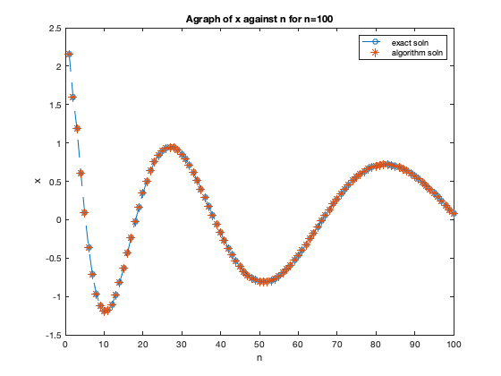
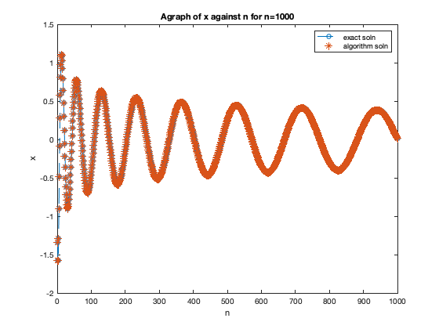

fprintf('No2(d).\n\n');
clear all;
close all;
n1 = 100; n2 = 1000;
[A1,xa1,f1] = algorithm(n1);
x1=A1\f1;
[A2,xa2,f2] = algorithm(n2);
x2=A2\f2;
figure(1)
plot(x1,'--o')
hold on
plot(xa1,'*')
legend('exact soln','algorithm soln');
xlabel('n');ylabel('x');
title('Agraph of x against n for n=100')
figure(2)
plot(x2,'--o')
hold on
plot(xa2,'*')
legend('exact soln','algorithm soln');
xlabel('n');ylabel('x');
title('Agraph of x against n for n=1000')
fprintf('As seen from the graphs above their is no difference between the exact solution from the solver \n and from the algorithm, hence it gives the correct answer.\n\n')
function [A,x,f] = algorithm(n)
i = [1:n]'; a = i;
j = [1:n-1]'; b = -(j+1)/3; c = b;
k = [1:n-2]'; d = -(k+2)/6; e = d;
l = [3:n-2]'; fi(l-2) = 0;
f = [1/2 1/6 fi 1/6 1/2]';
[x] = pentadiagonal(a,b,c,d,e,f);
A = diag(d,-2) + diag(b,-1) + diag(a) + diag(c,1) + diag(e,2);
end
No2(d).
As seen from the graphs above their is no difference between the exact solution from the solver
and from the algorithm, hence it gives the correct answer.
 